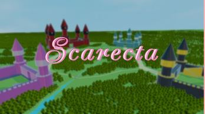

Scarecta
Uma visual novel sobre uma princesa que precisa salvar o seu reino e escolher um pretendente.
Ver jogoUma visual novel sobre uma princesa que precisa salvar o seu reino e escolher um pretendente.
Ver jogo
Um jogo 3d sobre uma caçadora de recompensas que vai atrás de um perigoso mago, invadindo o seu castelo e sendo transportada para uma outra dimesão.
Ver jogoSou estudante de Game Design apaixonada por criar experiências interativas e narrativas.